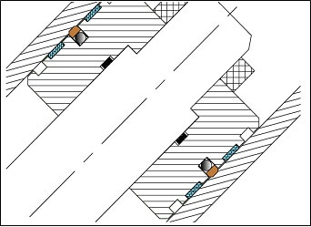
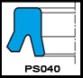
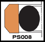
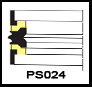
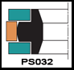
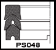
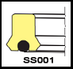
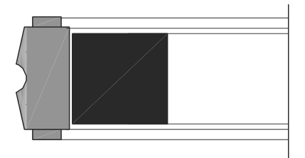

The main function of a piston seal is to provide enough resistance in order to maintain the hydraulic pressure necessary to make the piston move. They are internal to the cylinder head and seal against the cylinder bore, preventing fluid from flowing across the piston. Piston seals for hydraulic cylinders separate the two pressure chambers on the rod and piston side of the cylinder. Choosing the appropriate piston seal for a given application is primarily dependent on how the cylinder operates i.e. in single-acting or double-acting operations.For single acting pistons, high pressure on one side, low on the other, seal behaviour does not differ in principle from that of rod seals. Double acting piston seals have to be symmetrical with reference to a radial plane, and the dynamic leakage is usually less important, as it remains within the actuator. Seals need to be designed in a manner so as there is always a possibility of a thin lubrication film that passing through the contact area between the seal and the cylinder tube surface. A double-acting piston with two single-acting seals is generally avoided as high pressure can be trapped between the seals leading to premature seal failure.
Basic materials: Polyurethane, Nitrile, Fluorocarbon, Silicone, EPDM, fabric reinforced elastomers, PTFE and its compound and other engineering plastics.
Seal profiles for Hydraulic Piston applications.
Seal profiles for hydraulic piston applications

PS040View profile & technical details →
PS008View profile & technical details →
PS024View profile & technical details →
PS032View profile & technical details →
PS048View profile & technical details →
SS001View profile & technical details →
PS096View profile & technical details →